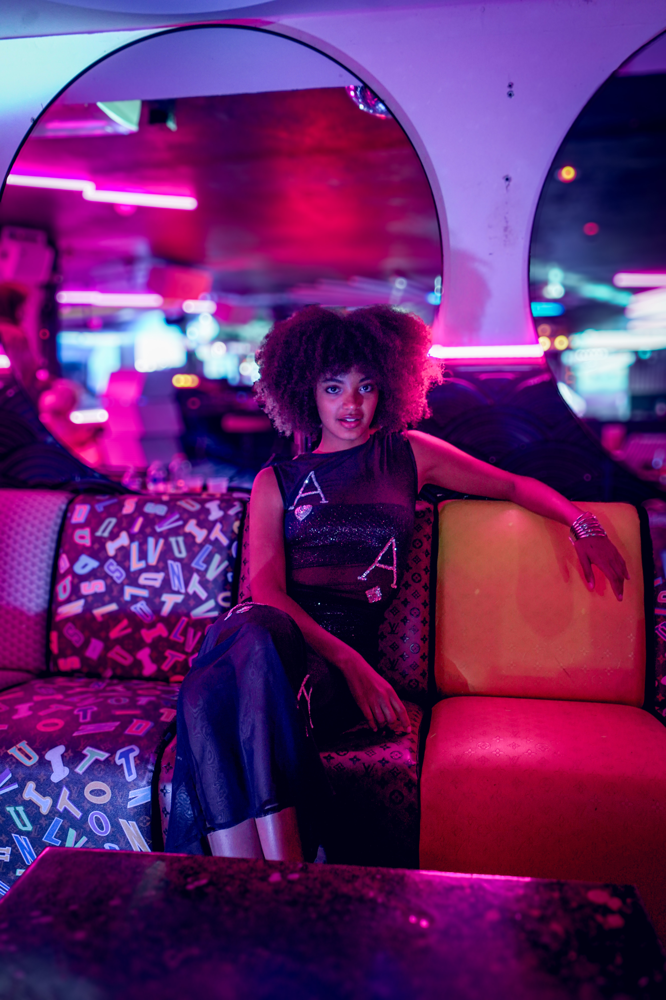
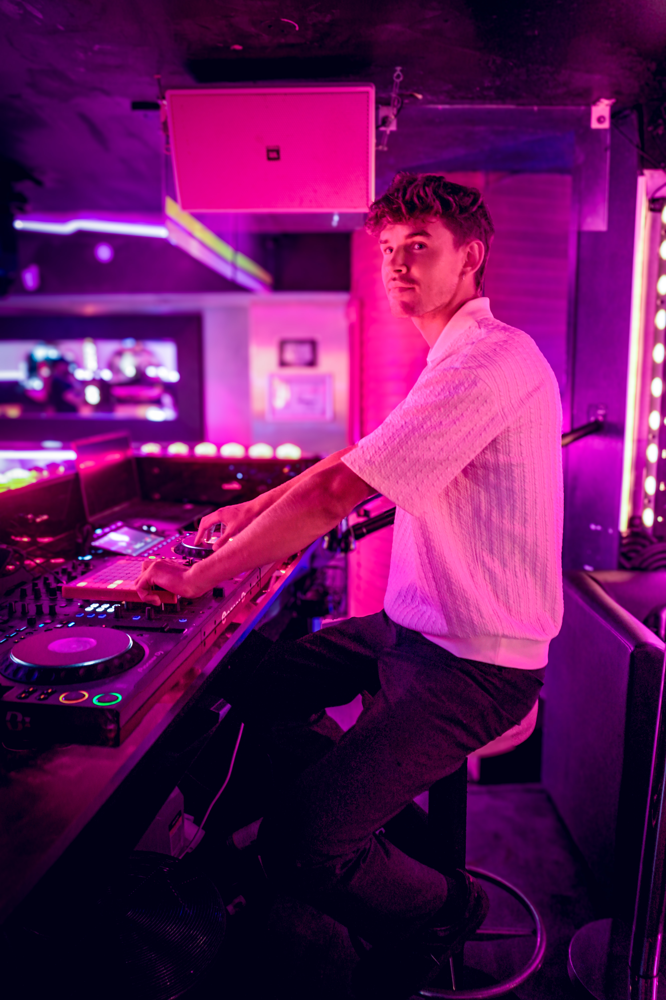
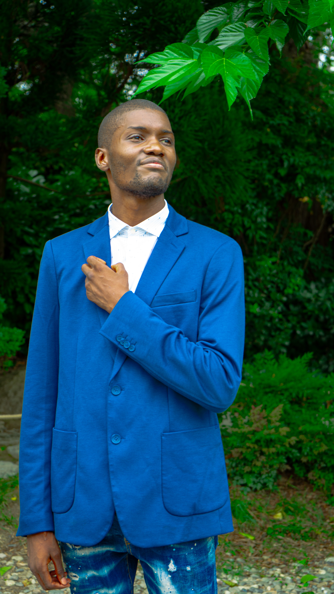

Joseph Fink
Série portrait réalisée dans un environnement urbain minimaliste. À travers les contrastes de lumière et les silences du regard, j’ai cherché à capter une présence, une tension, une émotion retenue.


La photographie est pour moi une extension du regard cinématographique.
J’y explore les silences, la matière, la lumière et la présence du corps dans l’espace.
Série portrait réalisée dans un environnement urbain minimaliste. À travers les contrastes de lumière et les silences du regard, j’ai cherché à capter une présence, une tension, une émotion retenue.
Série mode conçue pour mettre en lumière les silhouettes et les matières. L’approche visuelle privilégie la pureté des lignes, la texture des tissus et une esthétique contemporaine.




Captée lors d’un événement urbain, cette série explore le mouvement et la spontanéité. Entre énergie collective et instants suspendus, l’image devient fragment de narration.



Série réalisée lors du défilé “Métamorphose”. Entre lumière scénique et mouvement des corps, les créations prennent vie dans l’instant.